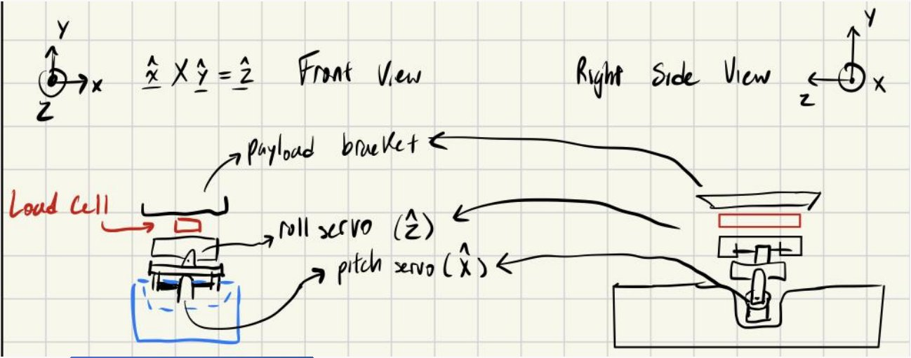
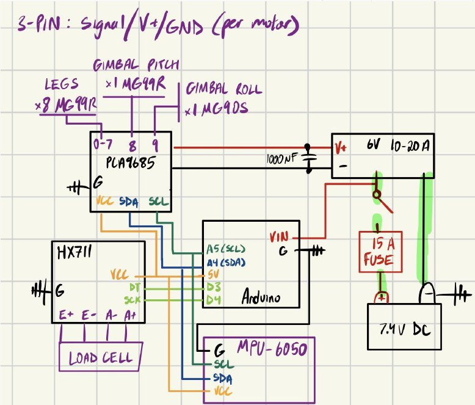

LevelHound
A low-cost, servo-driven robot dog that keeps whatever it carries level, whether it's walking on flat ground or standing on a slope. Built with teammate Ishmael Auqui.
The problem
Robots tilt on uneven ground and slopes, which spills, damages or disturbs delicate payloads like lab samples, sensors and fragile items. Legged robots handle rough terrain better than wheels, but few actively keep their payload level, and the ones that do are expensive research platforms.
The idea
Level it twice. If the legs tilt the body back toward level first, a small two-axis gimbal on top only has to correct the leftover tilt. Our hypothesis is that this combination keeps the payload within 3° of level on slopes up to 25°, which a gimbal alone can't do.
Three behaviors
The robot switches between three states based on what its sensors read: an IMU for body tilt and a load cell under the payload for weight.

Design so far
The frame is laser-cut plywood with a target mass under 1.5 kg. Each leg has two degrees of freedom (hip and knee) on aluminum servo brackets with rubber feet. The gimbal stacks a pitch servo recessed into the body, a lighter roll servo above it, and a 1 kg load cell under a 3D-printed payload bracket.



| SUBSYSTEM | COMPONENTS |
|---|---|
| Power | 2S LiPo (7.4 V) → 15 A fuse → switch → regulator for servos, Arduino Nano for logic |
| Actuation | PCA9685 16-channel servo driver: 8 leg servos, gimbal pitch and roll |
| Servos | 9 × MG996R (legs and pitch), 1 × MG90S (roll) |
| Sensing | MPU-6050 IMU, 1 kg load cell with HX711 amplifier |
How we'll test it
An adjustable ramp from 5° to 25°, a cup of water on the tray, and a second IMU on the tray to measure its tilt directly. We set pass/fail targets before building anything:
| TEST | TARGET |
|---|---|
| Slope | Payload tilt ≤ 3° from 0–25°, and lower than gimbal-only at 20° and 25° |
| Walking | Payload tilt ≤ 5° RMS, at least 50% lower than with the gimbal off |
| Slope mode | Triggers within 2 s of passing 15°, with no false triggers over 2 min of flat walking |
| Crouch mode | Triggers correctly above 300 g in at least 9 of 10 trials |
| Spill | A cup filled to 1 cm below the rim loses under 2 g of water on a flat walk and a ramp |
Results will go here once testing wraps up at the end of the semester.